高级平替-不锈钢的维多利亚时代 | Ben Dory 「艺术访谈」
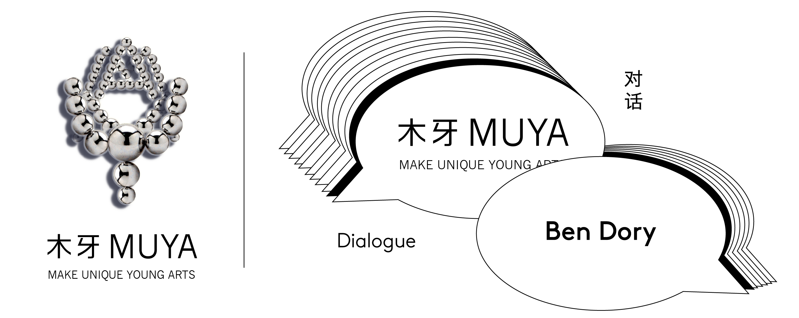欢迎来到木牙Make Unique Young Arts，和我们一起探索科学与情感之间的联系以及可以佩戴的维多利亚时代～～
组成物质的最基本单位是原子(atom)。 一个原子包含着一个原子核和一些围绕着原子核高速运动的电子。 在原子核中又有质子和中子。 ... 原子也一样，许多原子结合在一起形成的原子团叫分子(molecule)。—— 维基百科
点成线，线成面，点是几何中最基本的组成部分。 在通常的意义下，点被看作零维对象，线被看作一维对象，面被看作二维对象。 点动成线，线动成面。 任何一门艺术都含有它自身的语言，而造型艺术语言的构成，其形态元素主要是：点、线、面、体、色彩及肌理等。—— 百度百科
科学上物质的组成与艺术里的点线面看似是两个没有关联的两个领略。可真的是这样的吗？随着跨领域的频繁出现，这个边界被逐渐模糊。而这样的理念其实早已存在。今天我们邀请了Ben Dory来到木牙MUYA带我们走进珠宝的维多利亚时代。
The most basic unit of matter is the atom. An atom contains a nucleus and some electrons moving around the nucleus at high speed. In the nucleus there are protons and neutrons. . The same is true of atoms, many of which are joined together to form a group of atoms called molecule. -- Wikipedia
Points form lines, lines form planes, and points are the most fundamental building blocks of geometry. In the usual sense, a point is considered a zero-dimensional object, a line is considered a one-dimensional object, and a surface is considered a two-dimensional object. A point moves into a line, and a line moves into a plane. Any art contains its own language, and the form elements of plastic art language are mainly point, line, plane, body, color and texture. -- Baidu Baike
The composition of matter in science and the dots, lines and planes in art seem to be two unrelated phenomena. But is it really so? With the frequent occurrence of cross-domain, this boundary is gradually blurred. And the idea already exists. We invited Ben Dory to MUYA to take us into the Victorian era of jewelry.
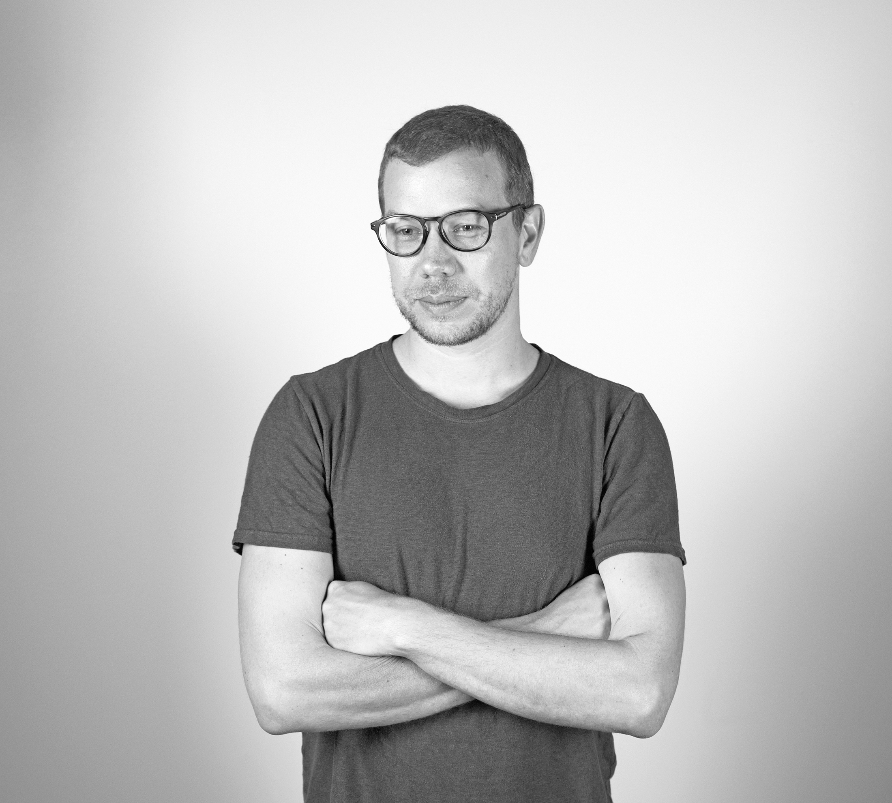
Ben Dory是一位艺术家和当代首饰金属匠，最初来自堪萨斯州堪萨斯城。 Dory于2014年在堪萨斯大学获得金属加工/珠宝学士学位，并在伊利诺伊州南部大学Carbondale获得了金属锻造硕士学位。在保持工作室实践的同时，Ben探索了艺术领域的各个领域，包括工作室技术员工作，产品设计，非营利组织编程，以及讲习班的指导。Dory最近刚刚在阿拉斯加州小石城的Windgate艺术与设计中心结束了为期3年的常驻艺术家职位。
Ben Dory is an artist and metalsmith originally from Kansas City, KS. Dory received his BFA in Metalsmithing /Jewelry from the University of Kansas and his MFA in Metalsmithing from Southern Illinois University Carbondale in 2014. While maintaining his studio practice, Ben explored various disciplines in the arts, including studio technician work, product design, nonprofit programming, and workshop instruction. Dory recently completed a 3-year artist-in-residence position at the Windgate Center of Art + Design in Little Rock, AR.
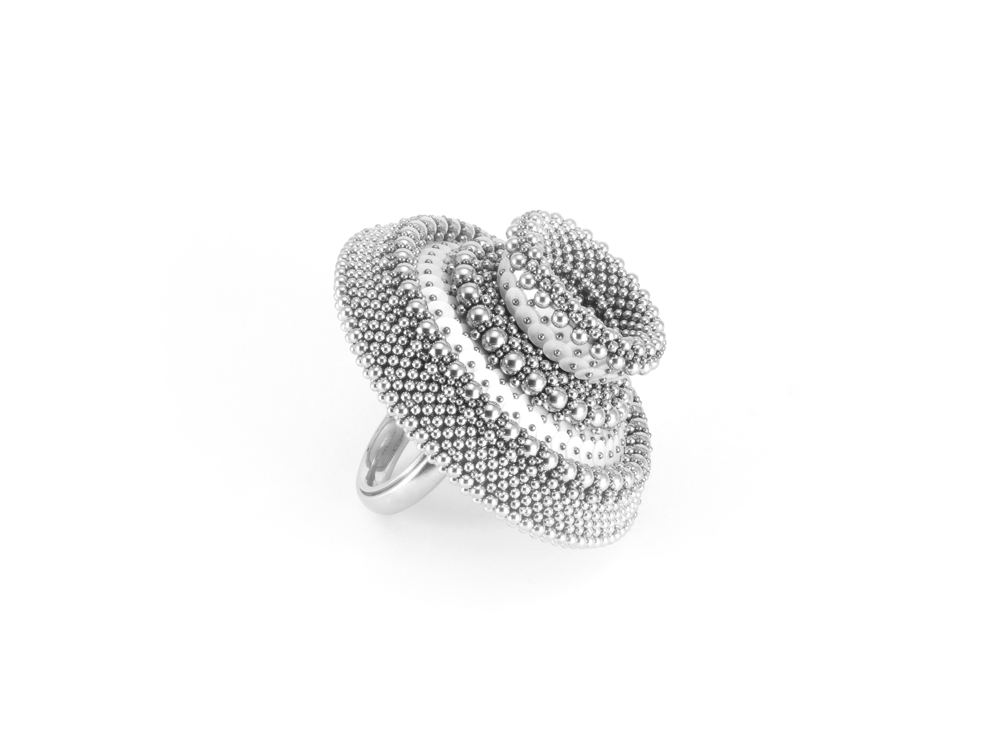
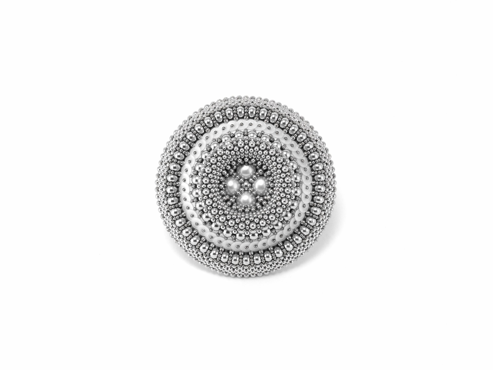

Ben Dory着迷于制球的方法，这是一种古老的技术，其中使用火炬或窑炉将小的，主要是金属融合在一起成为球体。各种大小的球体如何装配在一起并形成简单的可重复结构？
Dory是不锈钢制粒技术的先驱，并使用特殊的机器将钢粒分别微焊接到基体表面上。他的作品既尊重制粒的传统，又打破传统。他的工作从遵循某些几何准则开始，但他的创造力不受这些准则的限制。
根据Dory的说法，“当颗粒从垂直堆积移到弯曲表面时，规则就弯曲了……”，而以前的有限策略也有潜力发展。当Dory探索各种可能性时，他的风格从科学和分子转变为情感和华丽，让人回想起维多利亚时代的蓬勃发展。Dory享受着造粒给今天的艺术家带来的苛刻和鼓舞人心的挑战。
Ben Dory is fascinated with the how of granulation, an ancient technique where small, primarily gold spheres are fused together using a torch or kiln. How do spheres of various sizes fit together and form simple, repeatable structures?
Dory is a pioneer of the stainless steel granulation technique and uses special machines to individually micro-weld the steel granules together and onto a base surface. His work both honors the tradition of granulation and breaks from it. His work begins by following certain geometric guidelines, but his creativity is not constrained by them.
According to Dory, “as the granules move away from vertical stacking and onto curved surfaces, the rules bend…” and previously finite strategies blossom with potential. As Dory explores the possibilities, his style shifts from scientific and molecular to emotive and ornate, reminiscent of the Victorian era with all its flourishes. Dory relishes the exacting and inspiring challenge that granulation presents today’s artists.
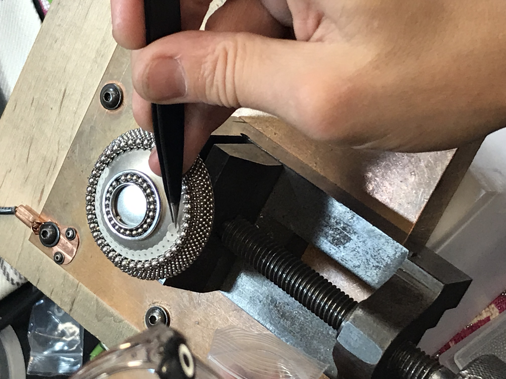

➤ 木牙MUYA: Ben可以详细的解释一下是如何用不锈钢粒（Simplistic yet descriptive, stainless granulation）来认识工艺历史并反思周围系统的复杂性的呢？
“Simplistic yet descriptive, stainless granulation is a way for me to recognize craft history while reflecting on the complexity of systems that surround me.” – BEN DORY
Could Ben explain in detail how to use simplistic yet descriptive, stainless granulation to understand the process history and reflect on the complexity of the surrounding system?
Ben: 考虑到造粒产生的结构，形成金字塔和四面体的基本单位的嵌套球体，我惊讶于这些不起眼的形状在重复时会产生出如此华丽而美丽的图案。由于我的不锈钢制粒方法比传统方法要快得多，因此我可以探索和尝试各种模式。我想到了历史上的艺术家和珠宝商，他们努力用传统的珠宝技术来绘制相同的图案。作为这种思想的延伸，我想起了创建对象时需要技巧的时间，技巧和纪律-整个过程中通常都是匿名工作人员进行的。
在反思我们周围的系统时，我发现试图理解创建任何给定系统（无论是政府系统，情感系统，种族系统，教育系统，经济系统）的大量活动部件是不堪重负的。将更大的组件分解成更简单，更易于管理的想法，动机或构建基块。这是我用来试图理解世界的复杂性的过程。与制粒过程非常相似，基本的起始结构会构建到复杂的系统中。
When thinking about the structures that granulation creates, nesting spheres that form pyramids and tetrahedra as the basic units, I’m amazed that these humble shapes can create such ornate and beautiful patterns when repeated. Since my approach to stainless granulation is much quicker than the traditional methods, I’m able to explore and experiment with a large variety of patterns. I think about artists and jewelers throughout history working to execute the same pattern with traditional jewelry techniques. As an extension of that thought, I’m reminded of the time, skill, and discipline that craft demands in the creation of objects - often by anonymous workers throughout history.
Reflecting on the systems around us, I find it overwhelming to try to comprehend the enormous amount of moving parts that create any given system, whether it is governmental, emotional, racial, educational, economic… To help with this feeling, I break down the larger components into simpler, manageable ideas, motives, or building blocks. This is a process I use to try to understand the difficult complexities of the world. Much like the process of granulation, basic beginning structures build into intricate systems.
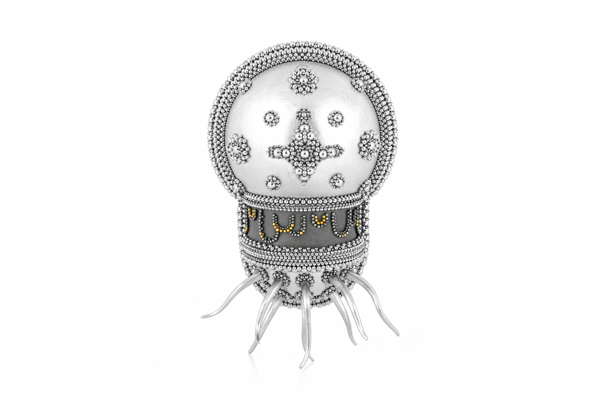
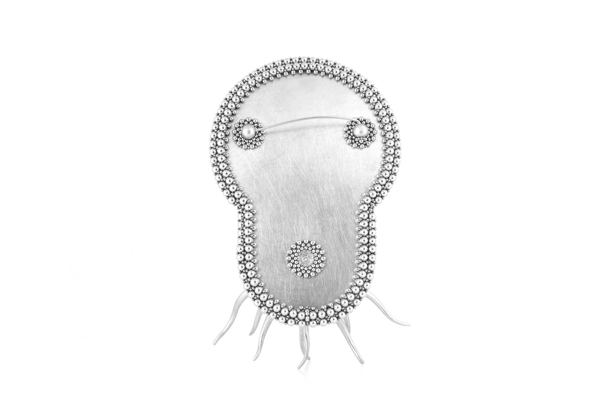
➤ 木牙MUYA: 可以从艺术或美学的角度，简要谈谈，在材料使用方面，不绣钢和银之间呈现的效果有怎么样的不同吗？
Could you talk about, as an artistic or aesthetics viewpoint, what the difference in material is between stainless and silver?
Ben: 尽管它们在视觉上相似，但它们分别代表了截然不同的环境和心情。两者都可以代表实用材料-诸如餐具，杯子和盘子之类的家居用品，但是，尤其是现在，真正的银器和家居用品暗示着特殊的品味，经济地位和熟练的劳动力。另一方面，不锈钢几乎无处不在-如此之多，以至于在使用它时，我不知道我们是否考虑了它的制造方式或制造地点。银具有极好的延展性，使用简单的工具即可轻松移动和切割。简单地说，不锈钢很难使用。我的大多数表格都需要液压机和特别硬化的切割工具。
当我们从珠宝的角度考虑这两种材料时，传统上可以将银视为高品质珠宝的介绍性金属。当然，每天都要通过新材料和新方法的大量探索和试验不断挑战这一概念。不锈钢饰品通常会招摇不定-可能来自大的路缘链或穿孔。它是工业的，非传统的和反文化的。在美术和艺术饰品中，不锈钢在针托和发现之外几乎看不到。我喜欢在超出预期范围的情况下呈现材料的挑战。
While they can be visually similar, each represents very different environments and moods. Both can represent materials of utility - household items such as flatware, cups, and platters, but, especially now, true silverware and household goods imply a specialized taste, economic status and skilled labor. Stainless, on the other hand, is almost ubiquitous - so much that in using it, I don’t know if we consider how or where it was made. Silver is wonderfully malleable, moving and cutting easily with simple tools. Stainless is, simply, hard to work with. Most of my forms require a hydraulic press and specially hardened cutting tools.
When we think about both materials in terms of jewelry, silver could traditionally be considered the introductory metal for higher quality pieces. Of course, this notion is continually challenged everyday with so much exploration and experimentation with new materials and methods. Stainless jewelry often has a swagger to it - which may come from big curb chains or piercings. It is industrial, non-traditional, and counter cultural. In fine- and art jewelry, stainless is not seen much outside of pin backs and findings. I love the challenge of presenting a material outside of its expected context.
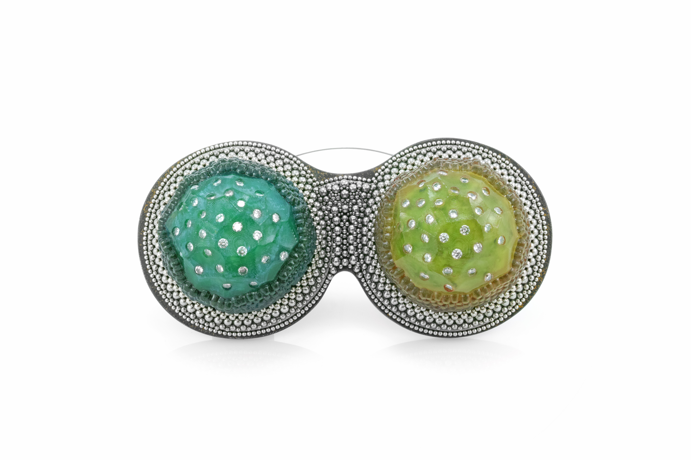
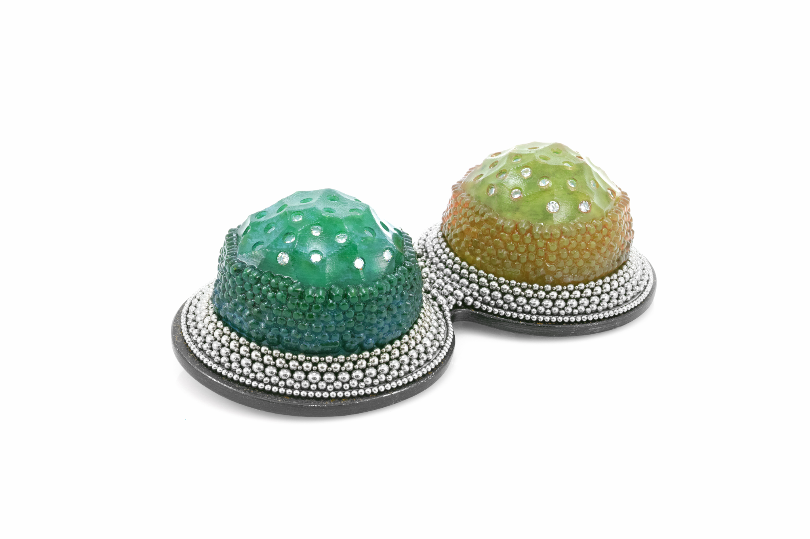
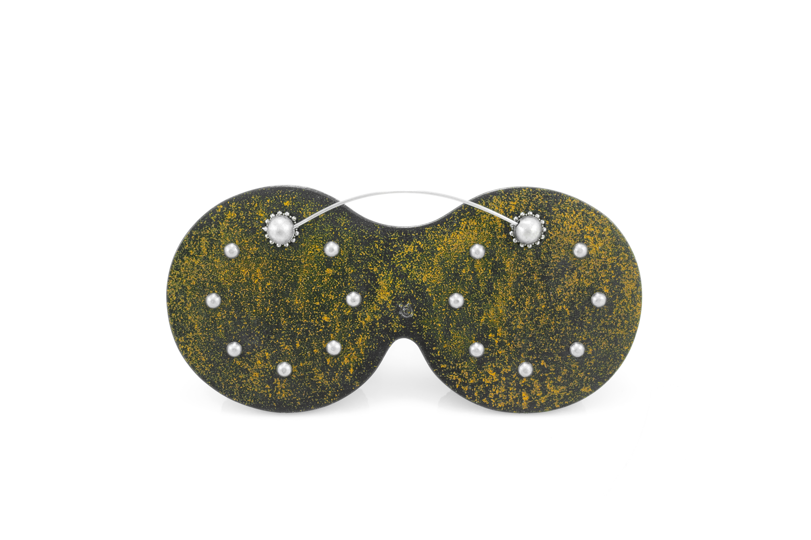
➤ 木牙MUYA: Ben将不锈钢粒作为最主要的作品灵感来源或者说是一定会使用的材料。不锈钢粒更是成为了Ben的一种标志，Ben是怎么理解这件事情的呢？拥有自己的专属标志是好是坏？
Ben takes stainless steel grains as the main source of inspiration for your works, or a material you will definitely use. Stainless steel grains have become a symbol of Ben. How does Ben understand this? Is it good or bad to have your own exclusive logo?
Ben:这是一个与系统思考有关的重要问题。一旦系统得以维持，就很难从中提取自己（或其组成部分）。寻找独特的声音或风格代表着对录音室实践的长期承诺，并涉及大量的实验和失败。我非常满意与特定的样式和方法相关联。因此，我期待着冒险并尝试更多的技术和材料。
This is a great question that ties into thinking about systems. Once a system begins to be sustained, it can be hard to extract yourself (or its components) from it. Finding a unique voice or style represents a long term commitment to a studio practice, involving a great amount of experimentation and failures along the way. I am very content to be associated with a specific style and approach. With that, I’m looking forward to taking risks and experimenting with more techniques and materials.
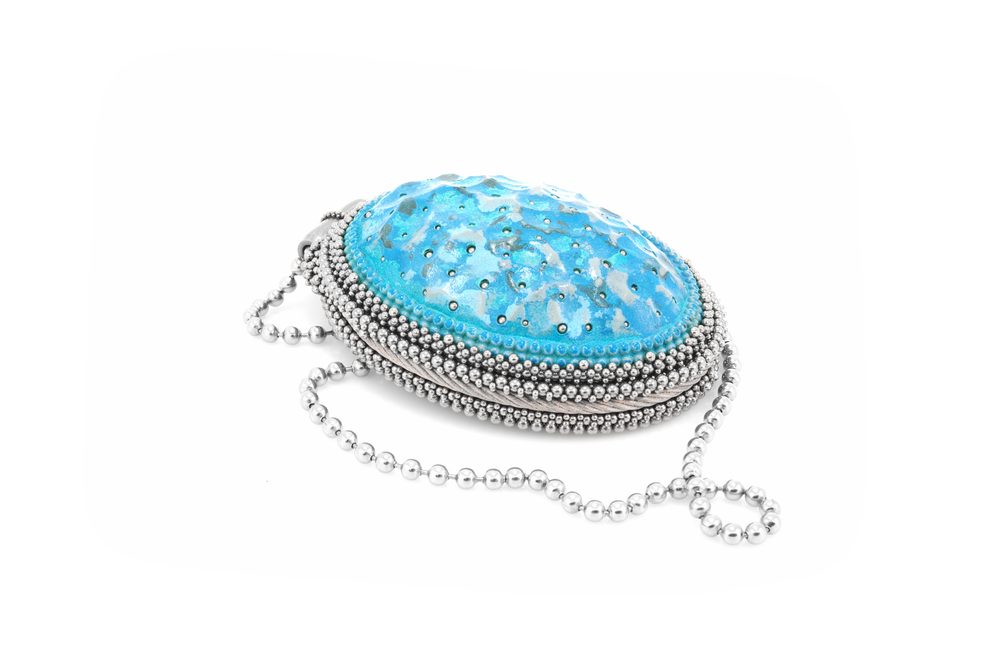
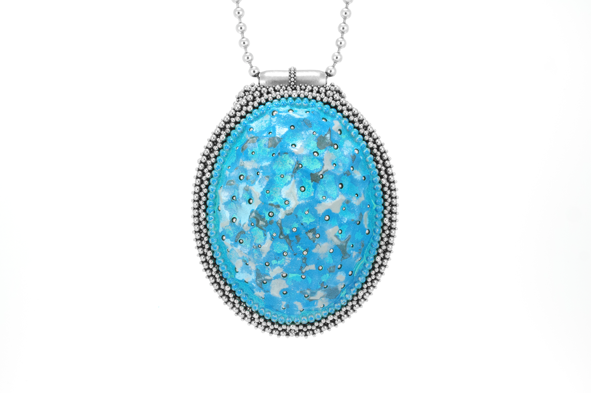
➤ 木牙MUYA: 风格不是一天形成的，Ben是在什么时间发现自己对于不锈钢粒有着不同的认知？在什么时期（本科，硕士）有了自己的风格？是否有以前完全不同风格时期的作品图片作为对比?
Style is not formed in a day. When did Ben find that you had a different perception of stainless steel grains? When (undergraduate / master / others) did you have your own style? Are there pictures of works from previous periods with completely different styles for comparison?
Ben:不锈钢制粒工艺于2016年开始成形。这是一个激动人心的时刻，因为我从未见过用不锈钢进行制粒的外观。在2014年获得硕士学位后，我的制作书籍如期进行，但我不相信我要坚持的方向是钢制首饰。一时兴起，并做出了一些演绎的飞跃，我进行了不锈钢造粒的过程。较早的作品记录在我的网站上，可以追溯到我在研究生院制作雕塑钢模时。
The stainless granulation process started to take shape in 2016. This was a thrilling time because I had never seen the look of granulation executed in stainless steel. After graduating with a master’s degree in 2014, my work making books had run its course, and I wasn’t convinced that the direction I was heading with steel jewelry was something I wanted to sustain. On a whim and with some deductive leaps, my process for stainless granulation came about. Older work is documented on my website, going back to when I was making sculptural steel forms in graduate school.
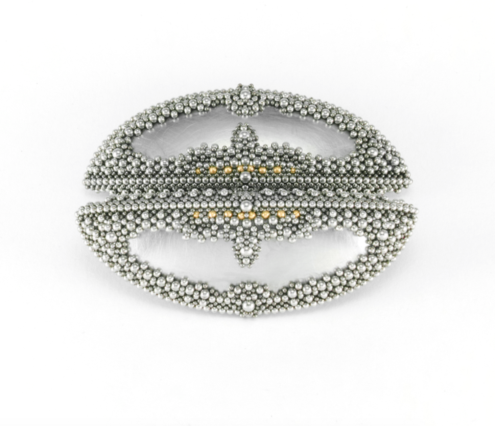
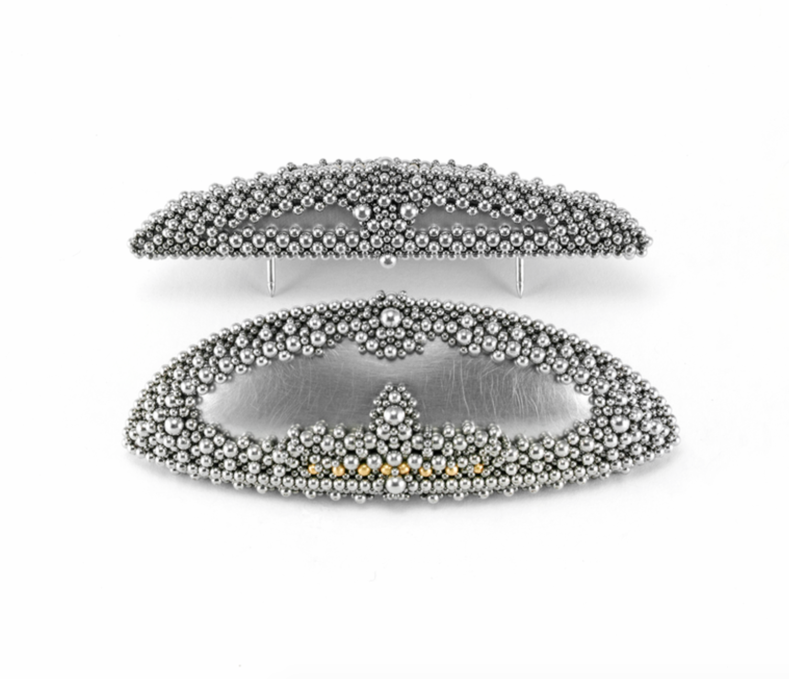
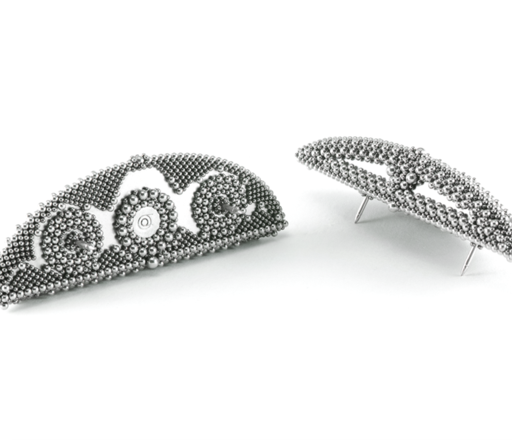
➤ 木牙MUYA: 在当下的时代，越来越多自主品牌和设计师独立品牌的优秀设计产品流入市场，对于Ben而言，如何看待作品作为产品的形式在市场进行售卖的这件事情呢？
Nowadays more and more excellent products of designer independent brands are flooding the market. For Ben, how do you view the work being sold in the market as a form of products?
Ben:在未来的几年中，我想在生产，有限运行，定制作品和探索性工作之间取得平衡。一方面，我想制作更实惠的作品，让更多的观众可以欣赏。另一方面，佣金和独一无二的作品令人兴奋，并与买家建立了个人联系。
探索性工作永远也不会出售，但往往会以某种研究的形式发送给展览。与所有这些方法的相似之处在于，我将始终在每个对象的制作上有所帮助。目前，大规模生产之类的东西听起来并不吸引人。珠宝生活在一个独特的地区，既可以作为可穿戴商品，也可以作为独立的艺术品。如果我们说某种产品是零售业的重复设计，那我可以接受，但是我确实将这项工作与更大，更复杂的作品分开了。
In the upcoming years, I want to strike a balance between production, limited runs, custom pieces, and exploratory work. On one hand, I want to make more affordable work that can be enjoyed by a wider audience. On the other, commission and one-of-a-kind pieces are exciting and create a personal connection with the buyer.
There is also the chance that exploratory work will never sell, but those are often sent to exhibitions, taking the form of a type of research. The similarity with all of these approaches is that I will always have a hand in the making of each object. Something like mass production does not sound appealing at this time. Jewelry lives in a unique area where it can be both a wearable commodity and a stand alone art object. If we are saying that a product is a repeated design meant for retail, I am ok with that, but I do separate that work from larger, more complex pieces.
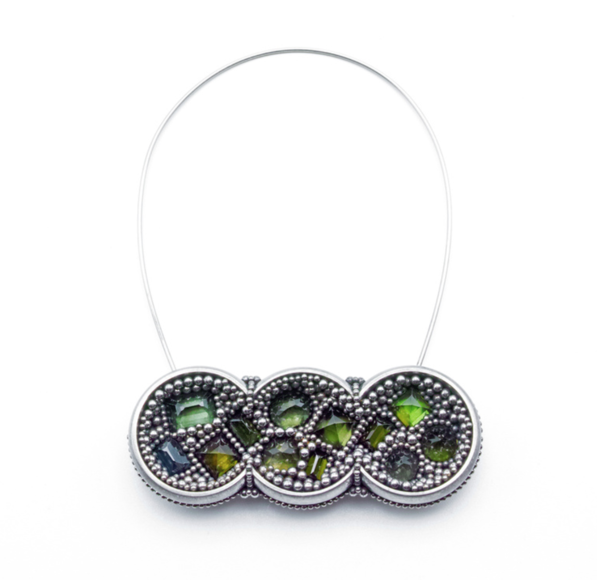
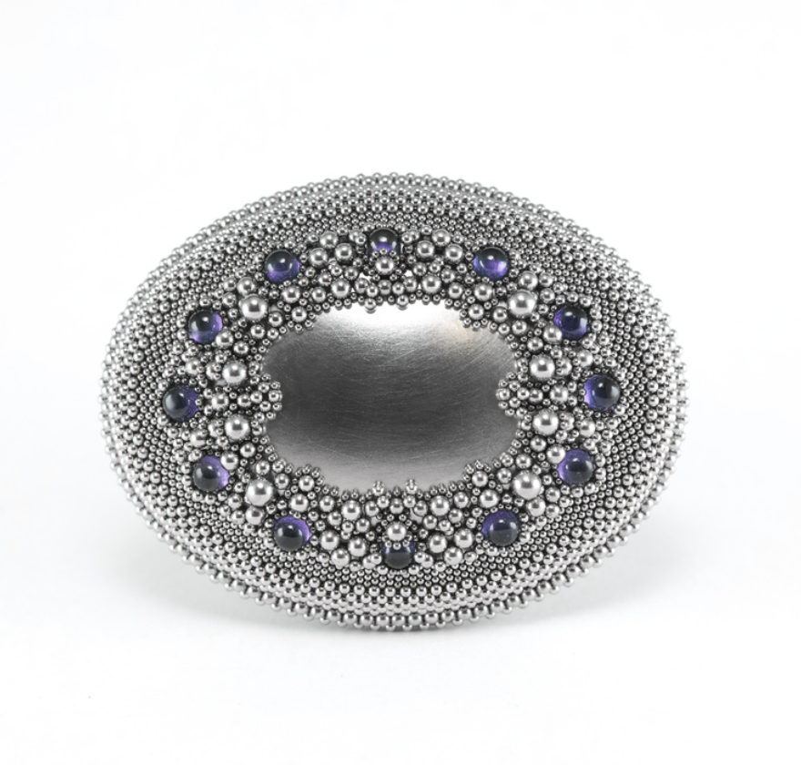
➤ 木牙MUYA: Ben的首饰作品有戒指，胸针还有项链，在您进行不同类别的首饰作品设计的时候，有因为最终输出的产品类别而对设计（大小，造型等）存在限制吗？又是怎么巧妙解决这样的局限性呢？
Ben’s jewelry works include rings, brooches and necklaces. When you were designing different kinds of jewelry, were there any restrictions on the design (size, shape, etc.) due to the final product category of output? And how do you solve such limitations in general?
Ben:胸针是最开放，最有趣的工作方式之一。需要固定它们，但是位置和方式完全取决于艺术家。我将胸针更多地看作是一块空白的画布，正是以此格式出现了许多使用新材料的实验。戒指和项链要求作品更加符合人体解剖学。综上所述，我喜欢平均制作每种珠宝。
尤其是戴戒指的时候，我喜欢将戒指的尺寸推大，并且仍然可以舒适地佩戴（也许实际上不戴）。我希望这样的机制易于使用和方便，以至于现在的项链通常足够大，不需要扣子，而当需要时，只需一个简单的钩子就足够了。每种格式的形状都是简单的棱柱和液压成型的垫子形状。总的来说，我希望穿用者感到自己身上有一个声明，总是在意识到自己身体的形态的同时，向他人投射某种个性。
Brooches are one of the most open and fun formats in which to work. They need to be pinned on, but the where and how is completely up to the artists. I think about brooches more as a blank canvas, and it is in this format that many experiments with new materials emerge.Rings and necklaces require that the piece works with the human anatomy much more specifically. With all of that said, I enjoy making each type of jewelry equally.
Especially with rings, I like to push how large they can become and still be comfortably (perhaps not practically) worn. I want the mechanisms to be easy and convenient to use, so much that necklaces now are often big enough that a clasp is not needed, and when they are, a simple hook will suffice. Shapes for each format are simple prisms and hydraulically formed cushion shapes. Overall, I want the wearer to feel that they have a statement piece on, always aware of the form on their body while projecting a certain outgoingness or gregariousness to others.
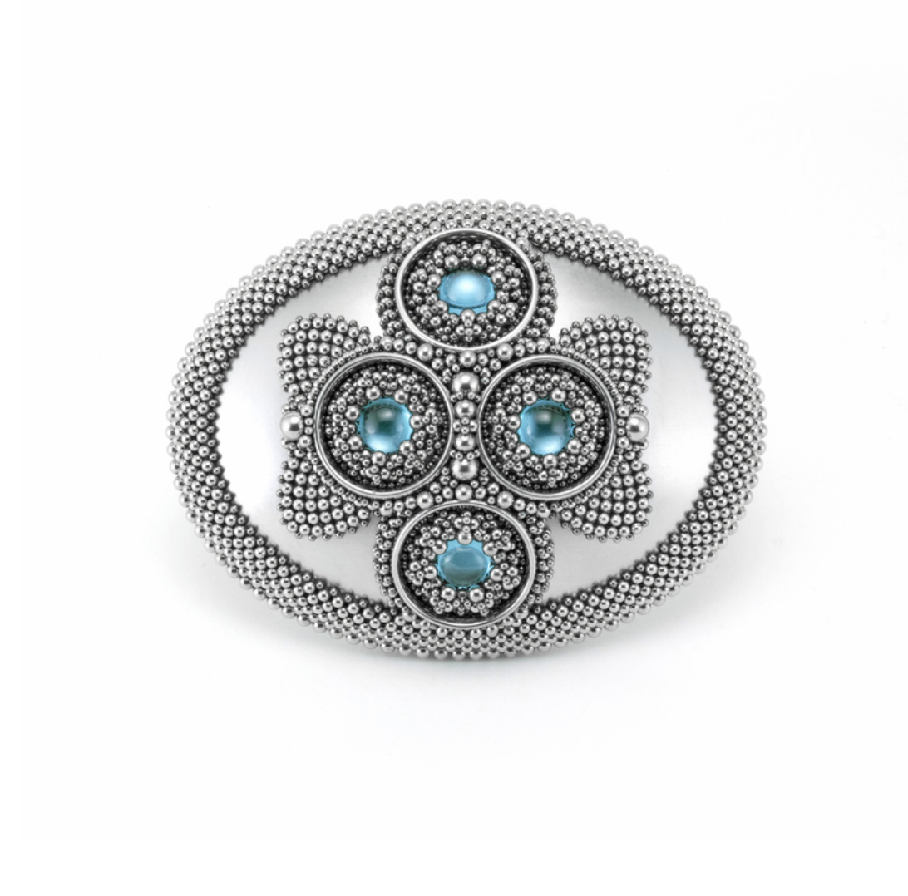
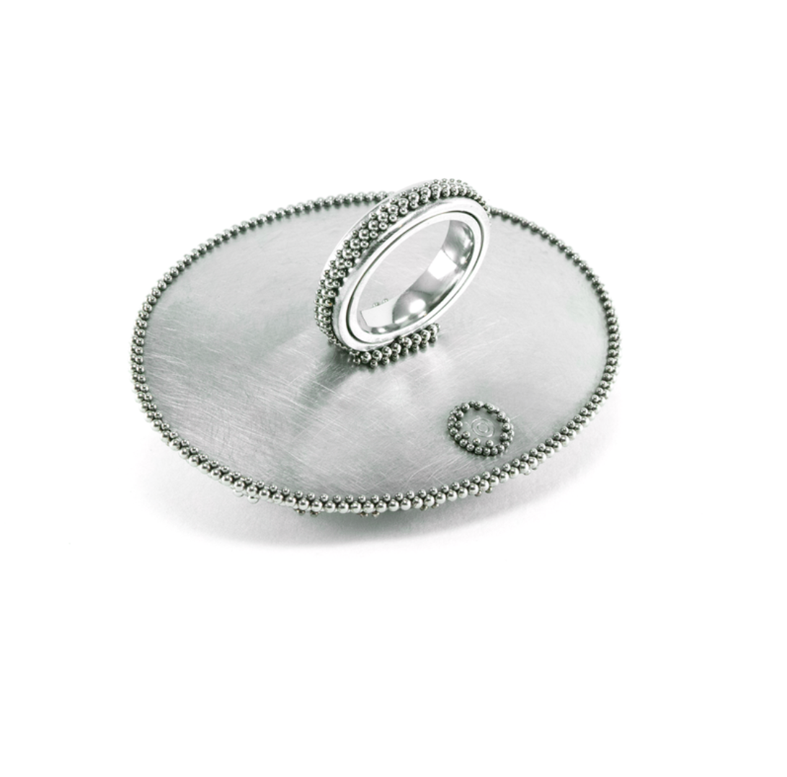
➤ 木牙MUYA: 在Ben的网站上看到了您的雕塑书籍，做的精致又可爱，像小小的积木，可以与我们分享下在设计首饰和设计书籍装帧的不同经历中，有哪些相似或互相借鉴的地方吗？
We saw your sculpture book on your art website. It is delicate and lovely, like a small building block. Could you please share with us the similarities or mutual references in the different experiences of designing jewelry and book binding?
Ben:谢谢你。当我意识到由于某些健康问题而无法再使用碳钢或铁匠铺工作时，就完成了这一工作。这些知识开始了寻找替代方法以维持我的金属创作路径的过程。从钢铁开始，我从书本上的铝过渡到钛首饰，然后再过渡到不锈钢首饰。在书中，您可以看到珠宝中呼应的重复图案和系统。我一直在寻找一种可重复的或模块化的工作方式，这些书也没有什么不同。经过铁匠铺的喧闹和尘土飞扬之后，装订干净，安静且经常打坐。这些工作品质在工作室中一直延续到今天。书还与珠宝有着私密的关系-这些物体被紧紧地保持着，并在很长一段时间内与人体共享空间。我发现在学科，媒体和流程之间建立联系是令人难以置信的收获。
Thank you. That body of work came about when I realized I could no longer effectively work with carbon steel or in a smithy due to some health concerns. That knowledge started the process of looking for alternative ways to maintain my creative path with metalwork. From steel, I transitioned from aluminum in the books to titanium jewelry and then to the stainless jewelry now. In the books, you can see repeated patterns and systems that are echoed in my jewelry. I’ve always sought to find a repeatable or modular way of working, and the books were no different. After the noise and dust of a smithy, bookbinding is clean, quiet and often meditative. These working qualities are continued today in the studio. Books also share a personal intimacy with jewelry - these are objects that are held close, sharing space with the body over long periods of time. Finding connections between disciplines, media, and processes is something I find incredibly rewarding.
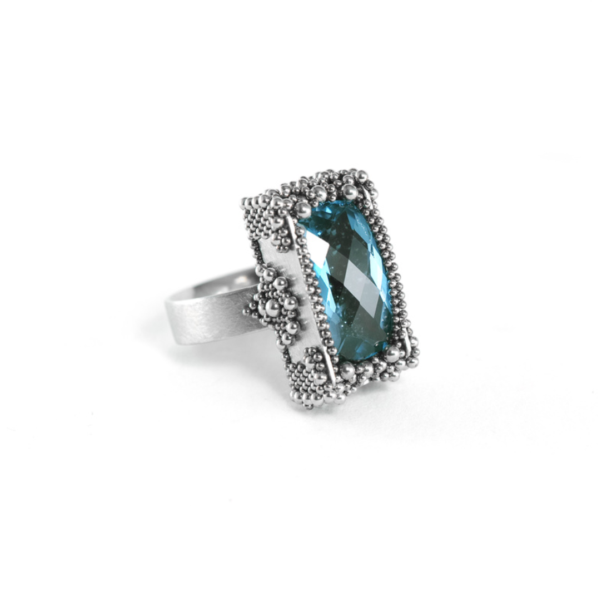
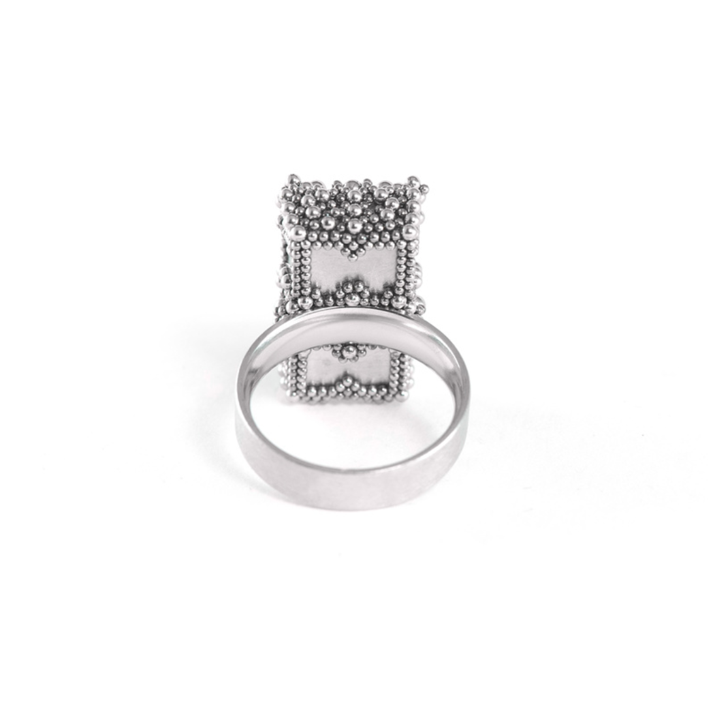
➤ 木牙MUYA: 作为一个职业的当代首饰艺术家，对于Ben来说需要具备哪些的能力？（从技术，思想，身体等）在这其中什么样的品质又是Ben最看重的呢？
As a professional contemporary jewelry artist, what abilities does Ben need to possess? (From technology, mind, body, etc.) What kind of qualities does Ben value most?
Ben:我在很大程度上珍视好奇心，坚韧和毅力。有了这些，我的工作室实践就不断发展，源源不断的灵感激发着我的每一天。坚定的决心鼓励我开始工作。这些代表了我认为必不可少的态度，但其他因素也是如此重要，例如对开发新技术和流程的意识。在这些文章中，我寻找可以对工作室有所帮助的新效率和新方法。在设计新作品时，风险也起着很大的作用。风险也可能意味着要在精神上挑战自己，努力克服我在内部造成的障碍。
I value curiosity, tenacity, and persistence to a great degree. With these, my studio practice continues to evolve, and a steady stream of inspiration motivates me everyday. A sense of determination encourages me to get to work. Those represent attitudes that I believe to be essential, but other factors are so important such as an awareness of developing technologies and processes. In these I look for new efficiencies and approaches that can help in the studio. Risk also plays a large role while designing new work. Risk can also mean challenging yourself mentally, working to overcome barriers that I have internally created.
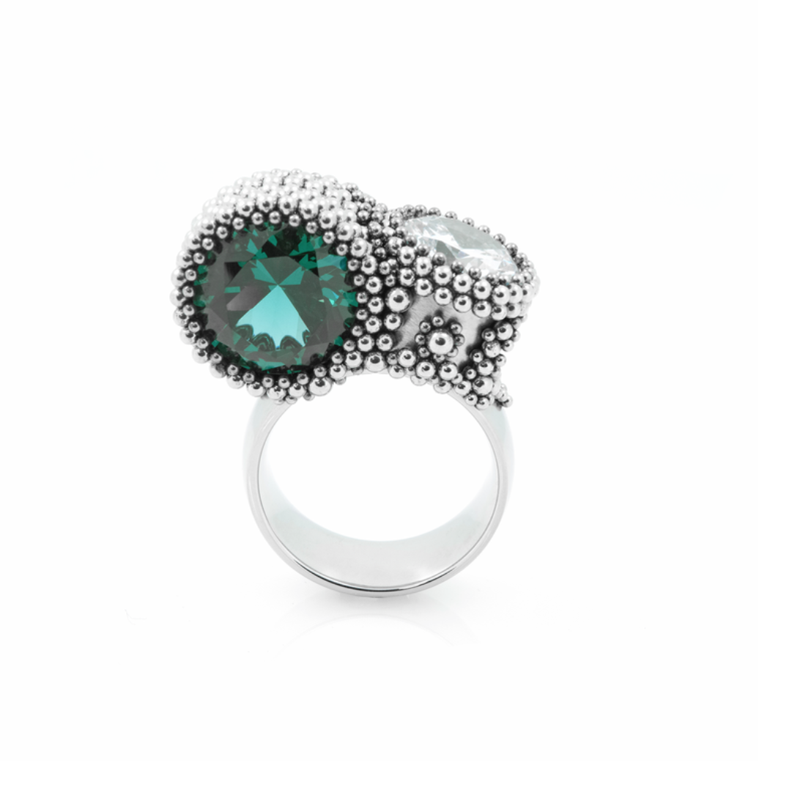
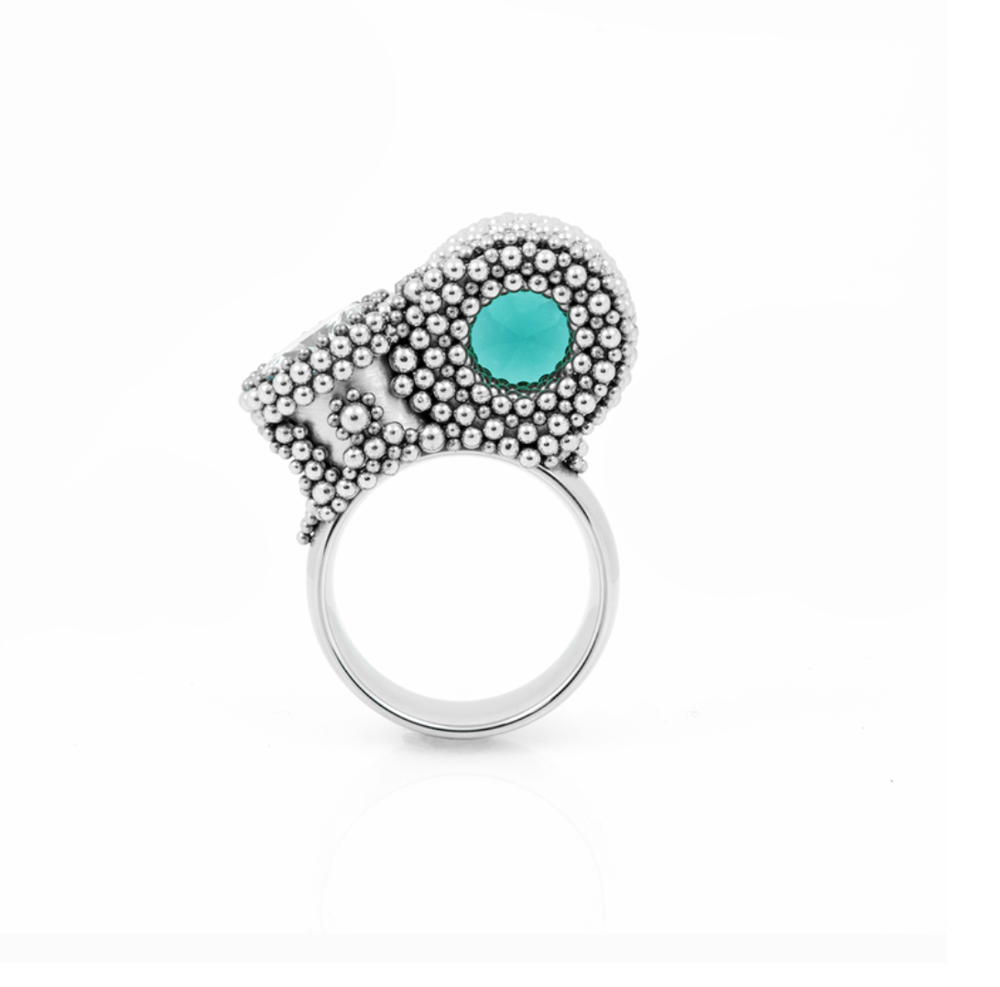
✯ Which inspire your works most ✯
“I have a modest proposal: let’s all try to cultivate our material intelligence. By this, I mean literacy in the physical world: the ability to understand it, just as someone who reads English can understand this sentence. If we can anchor ourselves in this way, attending closely to the objects near to us, we might just be able to regain our bearings, despite the complicated flux of 21st century life.” Glenn Adamson from The Case for Material Intelligence
“我有一个谦虚的建议：让我们所有人都努力培养我们的物质智慧。我的意思是说，在物理世界中的读写能力：理解能力，就像读英语的人可以理解这句话一样。如果我们能够以这种方式锚定自己，紧贴着我们身边的物体，那么尽管21世纪的生活充满了复杂的变化，我们也许也能重获新生。”
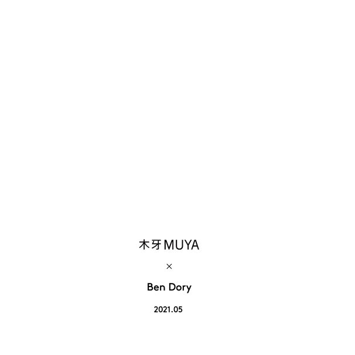
✤ Ben Dory网站（Ben Dory Website)
✤ INS(instagram): @bendorydesign
✤ 邮箱（Contact Email): Benjamindory@gmail.com
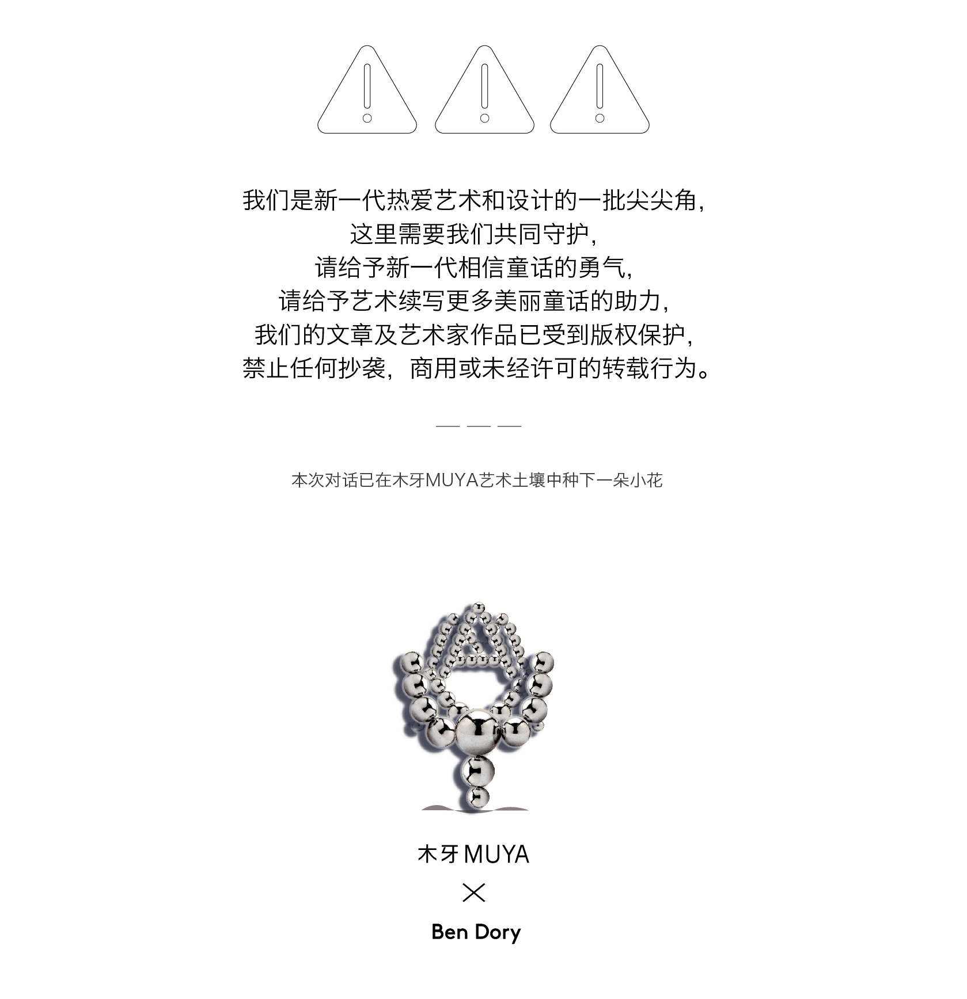
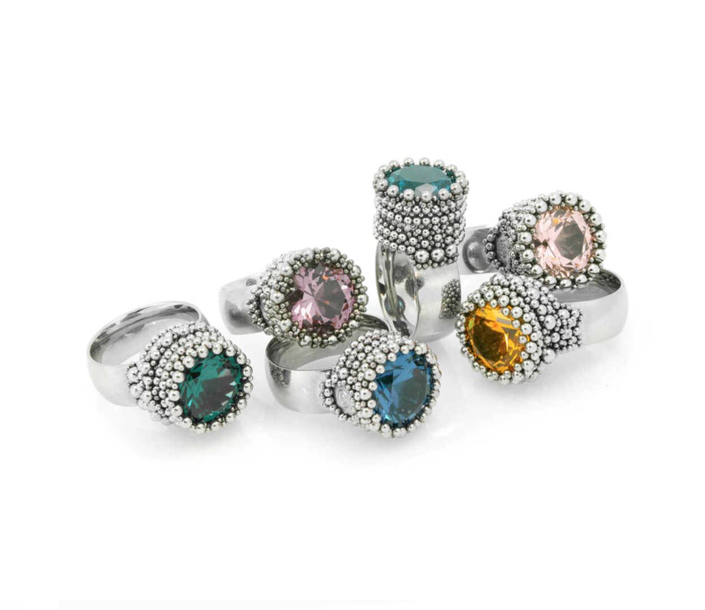
木牙微信订阅号